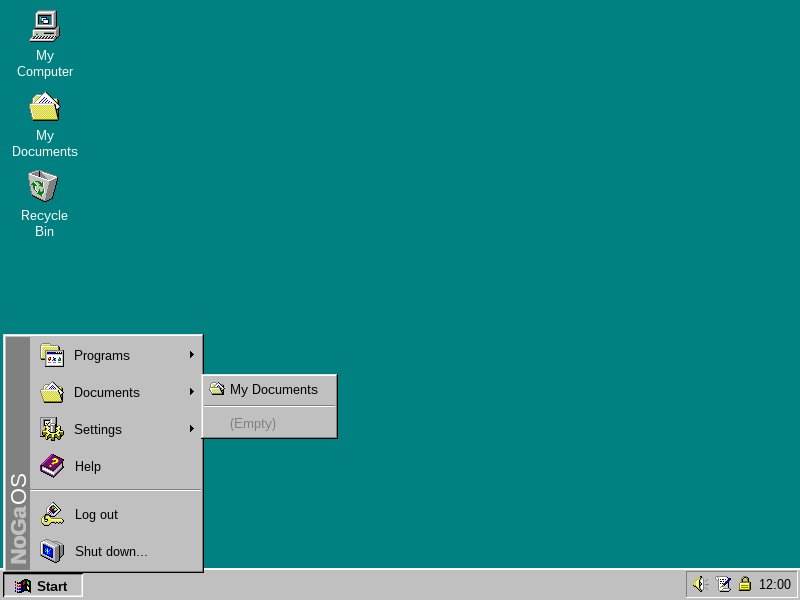

NoGa OS is a desktop-style app focused on helping kids learn real computer basics in a controlled space: mouse, keyboard, windows, files, and simple educational/play apps. It is intentionally not a real operating system.
38 MB · released 5 September 2026 · needs Java 17+ Linux, Windows, macOS and Raspberry Pi

Running it
Install Java 17 or newer, then run the downloaded file:
java -jar nogaos-136.jar
The first start asks you to create an account. Video and audio playback need VLC installed on the computer; nothing else does. On a Raspberry Pi it can be set to start on boot with no Linux desktop reachable behind it.
Status
This is a personal project, written for my own children and shared in case it is useful to anyone else. It is early and it has rough edges. If you try it, bug reports and comments are welcome.
Changelog
Version 135 · 31 August 2026
Internet Browser: right-click menu (open link, save picture, copy and paste, bigger or smaller text), file downloads with a progress window into your Downloads folder, typed words search the web, friendly pages when a site won't open or isn't allowed, videos can go fullscreen, PDF files open in the browser, and pages and PDFs can be printed
Internet settings: choose the search engine the browser uses
Version 134 · 30 August 2026
New Space Slingshot game: fling a rock past planets and let gravity bend its path — crash, drift away, or hold an orbit to win; 12 levels with bonus stars
Version 133 · 30 August 2026
New Discovery app: an illustrated "how things work" book where every page is a small machine to play with and a challenge to solve — three volumes on how computers work, light and colour, and sound and music
The Italian and Java Editor icons now have a proper small version, so they no longer appear oversized in the Start menu and file lists
Version 132 · 24 August 2026
Notepad: Undo now really undoes (a word at a time), Find ignores capitals, Time/Date follows the machine's language, typing works the moment the window opens, and the title reads "Untitled" from the start
WordPad: lists behave (Backspace removes a bullet, numbers recount themselves, Enter at the start of an item), copy/paste keeps formatting and WordArt, undo steps back a run at a time and keeps the toolbar in sync, documents never fall back to a computer-specific font, and several smaller fixes (Find ignores capitals, Date replaces the selection, the font and size boxes show the real value, Shift+Enter, focus on open)
Paint: floating selections and text are no longer flattened by the autosave, undo after a canvas resize works, New clears the history, the Magnifier zooms where you click, Shift constrains shapes, right-button shape previews and the colour eraser behave like Win95, and many smaller fixes
Version 131 · 23 August 2026
Italian: the voice speaks more slowly so the words are easier to follow
Version 130 · 23 August 2026
New Italian app: first Italian words for young children, with picture cards read aloud and a quiz that earns stars
Version 129 · 23 August 2026
New City Driver game: drive a delivery car through a top-down city, obeying traffic lights and staying on the road — three infractions send the police after you
Version 128 · 15 August 2026
The Save As dialog is now the classic Windows 95 one, matching the Open dialog, and file dialogs now start in your own drive instead of My Computer
Version 127 · 15 August 2026
NoGaOS Cloud: a parent can now connect the computer to a family- or school-run cloud provider from the Control Panel, using a one-time enrollment code
Backups can now go to several destinations at once — GitHub repositories and NoGaOS Cloud providers (no account or token needed) — each with its own status